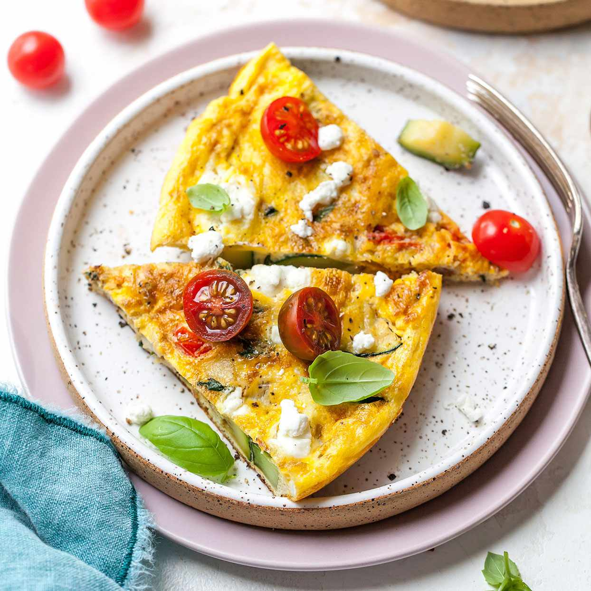

egg special diet
omelette diet
top 10 omelette diet
The dish appears to be an omelette with vegetables and cheese, which is a good source of protein and essential nutrients. Consuming such a meal can provide energy and support overall health, with the vegetables adding fiber and antioxidants.
Read More
chicken diet
top 10 chicken diet
The food in the image, likely a chicken wrap or pita, provides a good mix of protein, fiber, and vitamins from the chicken, vegetables, and whole wheat pita, making it a nutritious and balanced meal option.
Read More
rice meal diet
top 10 rice diet
The food in the image is a nutrient-rich meal, providing a good mix of protein, healthy fats, and complex carbohydrates, with benefits including sustained energy, improved heart health, and support for overall well-being.
Read More
salmon and broccoli diet
top 10 salmon broccoli diet
The dish in the image, featuring salmon and broccoli, is rich in protein, omega-3 fatty acids, and various vitamins and minerals, making it a nutritious and healthy meal option.
Read More
broccoliand bell pepper diet